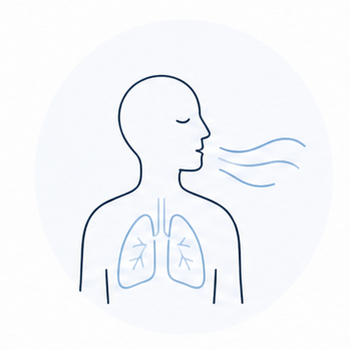
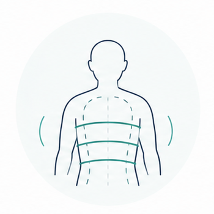
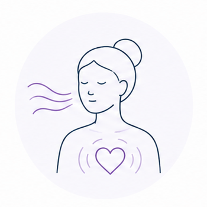
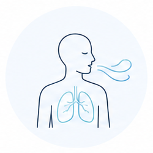
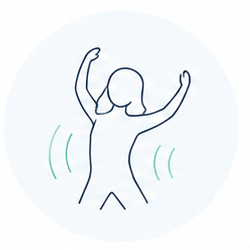
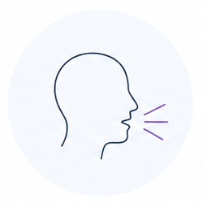
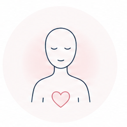
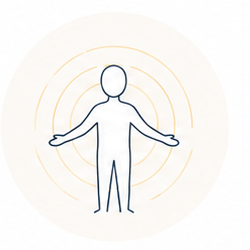

Gyvenimas vyksta galvoje
Iš išorės funkcionuojame, bet kūnas kalba įtampa, nuovargiu, paviršutinišku kvėpavimu ir nerimu.

Liepos 22 d. demo vakaras · Liepos 31 - rugpjūčio 2 d. seminaras Vilniuje
3 dienų Olego Lapino seminaras norintiems nusimesti įtampą ir išsekimą per kvėpavimą, judesį, garsą ir emocijų išraišką.

Dirbate. Bendraujate. Šypsotės. Funkcionuojate.
Bet kūnas gali pasakoti kitą istoriją: įtempti pečiai, suspaustas pilvas, sunkumas krūtinėje, paviršutiniškas kvėpavimas, nuovargis, nerimas, mažai energijos.
Kartais atrodo, kad gyvenimas vyksta galvoje, o kūnas liko kažkur nuošalyje.
Pulsacijos padeda suprasti, kaip įtampa kaupiasi kūne ir kaip ji gali pradėti judėti.
Iš išorės funkcionuojame, bet kūnas kalba įtampa, nuovargiu, paviršutinišku kvėpavimu ir nerimu.

Sulaikyti jausmai kaupiasi kaip kvėpavimo blokai, vidinis suspaudimas ir nejautrumas.

Per kvėpavimą, judesį, garsą ir emocijų išraišką kūnas gauna erdvės paleisti tai, kas buvo sulaikyta.

Įtampa minkštėja, kvėpavimas gilėja, atsiranda daugiau gyvybingumo, jautrumo ir vidinės ramybės.
Šis seminaras gali būti jums, jeigu:
daug gyvenate „galvoje“ ir sunkiai jaučiate kūną;
pavargote nuo kontrolės, įtampos ir susilaikymo;
sunku išreikšti pyktį, liūdesį, verksmą ar norus;
jaučiate emocinį sustingimą;
kūne kaupiasi lėtinė įtampa;
įprastas poilsis nebeatstato;
norite daugiau gyvybingumo, jautrumo ir spontaniškumo.
Natūralus procesas, kuris pamažu grąžina tave į ritmą.

Kvėpavimas pajudina užstrigusią energiją.

Kūnas pradeda judėti, įtampa tirpsta.

Balsas padeda išleisti tai, kas ilgai buvo sulaikyta.

Saugiai išleidžiame sukauptas emocijas ir įtampą.

Energija grįžta į kūną kaip ritmas, jautrumas ir vidinė ramybė.
Tikslas nėra „išsikrauti dėl išsikrovimo“. Tikslas - atlaisvinti energiją, kad atsirastų daugiau gyvybingumo, jautrumo, vidinės ramybės ir stipresnis ryšys su savimi.
Pulsacijos dažnai prasideda ne nuo ramybės. Kartais pirmiausia iškyla chaosas: pyktis, džiaugsmas, liūdesys, katarsis. Tačiau kai kūnui leidžiama kvėpuoti ir judėti, chaosas pamažu įgauna kryptį.
Įtampa minkštėja. Kvėpavimas gilėja. Kūnas tampa jautresnis. Viduje atsiranda daugiau vietos gyvenimui.
Liepos 22 d. · Vilnius
Trumpesnis būdas pajusti metodo principą, susipažinti su atmosfera, užduoti klausimus ir suprasti, ar norite eiti į 3 dienų seminarą.

Liepos 31 - rugpjūčio 2 d. · Vilnius
Trijų dienų procesas, kuriame palaipsniui per kvėpavimą, judesį, garsą, emocijų išraišką ir integraciją grįžtama į gyvybingumą ir vidinį ritmą.
Kvėpavimas, pojūčiai, saugus kontaktas su savimi.
Susitikimas su kūno šarvais ir sulaikytais jausmais.
Išlaisvinta energija tampa gyvybingumu ir vidiniu stabilumu.
Pasirinkite lengvą pirmą žingsnį arba gilesnį 3 dienų procesą.
Liepos 22 d. Vilniuje. Trumpas būdas išbandyti, pajusti atmosferą ir suprasti, ar norite eiti giliau.
Liepos 31 - rugpjūčio 2 d. Vilniuje. Gili kelionė per kvėpavimą, judesį, garsą, emocijų išraišką ir integraciją.
Tinka poroms, draugams ar dviem kartu registruojantis į 3 dienų seminarą.
Vėliau seminaro kaina kils iki 400 €.
„Po proceso pajutau daugiau lengvumo kūne ir aiškumo, kur laikau įtampą.“
A., demo vakaro dalyvė
„Buvo saugu, aišku ir žemiška. Labai padėjo vedėjo ramybė.“
M., seminaro dalyvis
„Pirmą kartą supratau, kiek daug emocijų laikau ne galvoje, o kūne.“
R., 3 dienų seminaro dalyvė

Olegas Lapinas - daugiau nei 40 metų patirties turintis specialistas ir sertifikuotas Pulsacijų specialistas.
„Per savo 40+ metų praktiką Pulsacijas laikau vienu veiksmingiausių sutiktų metodų.“
Metų praktikos
Aiškus vedimas ir ribos
Savanoriškumas procese
Integracija po patirties
Ne. Pakanka noro tyrinėti savo kūną ir laikytis saugumo ribų.
Trumpai susipažinsite su metodo principu, atmosfera ir galėsite užduoti klausimus.
Ne. Procesas vyksta savanoriškai, savo tempu ir pagal asmenines ribas.
Demo vakaras yra įžanga. 3 dienų seminaras leidžia pereiti gilesnį procesą ir integraciją.
Pulsacijos yra intensyvus kūno ir emocinis procesas. Jis gali netikti nėštumo metu, turint rimtų širdies ir kraujagyslių ligų, aktyvią psichozę, sunkią epilepsiją, po neseniai atliktų operacijų ar esant kitoms būklėms, dėl kurių intensyvus kvėpavimas ir emocinis procesas gali būti rizikingas. Jei abejojate, pasitarkite su gydytoju arba organizatoriais.
Registracija
Pagrindinis kelias - WhatsApp žinutė. Jei patogiau, galite palikti duomenis el. pašto formoje.
Demo vakaras: liepos 22 d., Vilnius, 30 €.
3 dienų seminaras: liepos 31 - rugpjūčio 2 d., Vilnius, 350 €.
Dviese: po 300 € žmogui.